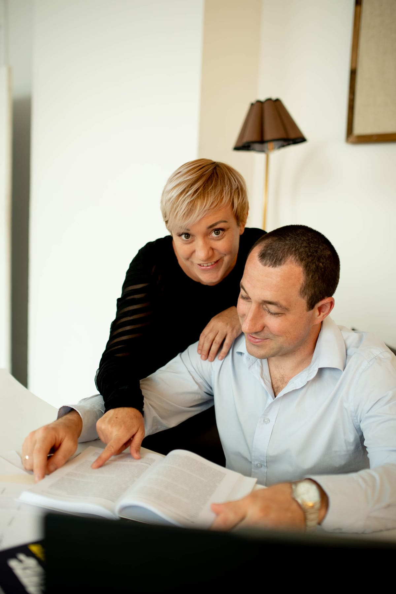
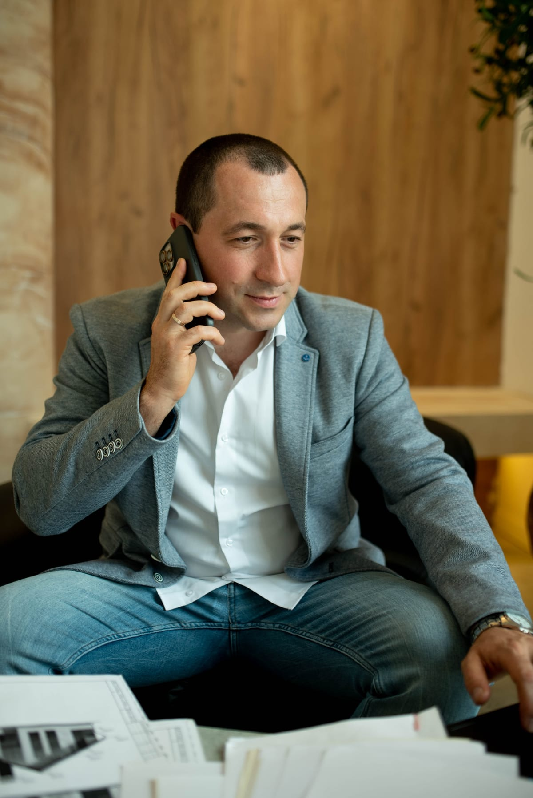
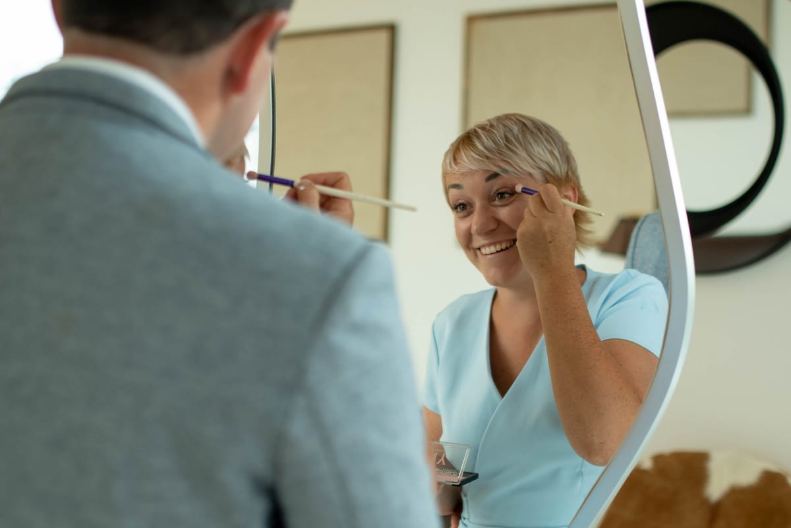

Проектируем и внедряем ассистентов под конкретные разделы проектной документации. Без шаблонных «обёрток над ChatGPT» — каждое решение собрано под нормы, шаблоны и BIM-процессы вашего института.
Написать в Telegram
Мы не консультанты со стороны. Каждый из нас прошёл путь от стажёра до ведущего специалиста и знает, где в работе ГИПа теряются часы и сорваны сроки.

Вёл крупные общественные и промышленные объекты. Знает, как разделы стыкуются между собой и где обычно ломается коммуникация со смежниками.

Специализируется на инженерных разделах: ОВ, ВК, ЭОМ. Параллельно — практика в LLM-инжиниринге и автоматизации технических расчётов.
Каждый ассистент знает СП, ГОСТы и внутренние шаблоны вашего института. Помогает проверять, оформлять и собирать тома — а не просто «отвечает на вопросы».
Не «коробочное решение». Каждое внедрение начинается с того, что мы садимся с вашими ГИПами и разбираемся, где именно теряется время.
Одна-две встречи. Смотрим, какие задачи ваши инженеры повторяют ежедневно, и где автоматизация даст реальный эффект.
Подключаем СП, ГОСТы, корпоративные шаблоны и типовые решения. Формируем закрытую базу знаний — только под вас.
Передаём ассистента в работу 2–3 инженерам. Корректируем по обратной связи, дорабатываем под рабочие сценарии.
Обновления при изменении норм, обучение новых сотрудников, расширение под смежные разделы. Без скрытых платежей.
Один разговор в Telegram, без презентаций и менеджеров. Ответим в течение рабочего дня.
Написать в Telegram